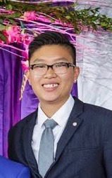

About Me
Well…as an American Born Chinese raised in Denver, Colorado my household believed I was destined to become a doctor or something along the medical field. As a child, I wasn’t the best student, I didn’t have the best grades but I tried my hardest to accomplish every task given to me. When I was 9 years old, technology was at it’s latest – 56k AOL internet was the hottest item on the market and I was privilege to have it at my home. Boy, I was surfing the web loving every minute of the “World Wide Web” and knew that I wanted to pursue a career within the technology world.
20 years later – I’ve gain knowledge and self-worth about myself from experiencing opportunities that lead me to what I want to do in this world. I want to contribute my time to face real problems in the world. I want to pave a bridge between healthcare and technology, bringing new innovation to help patients understand ways to benefit their health through coding.